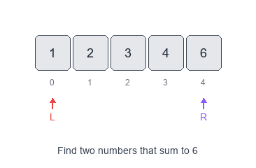
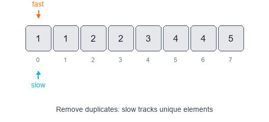

Introduction to Two Pointers Pattern
The Two Pointers pattern uses a small number of indices (usually two) that move through a data structure to achieve linear-time solutions for many array/string problems.
Visual Examples
Opposite-Direction Pointers (Pair Sum)

Same-Direction Pointers (Remove Duplicates)

When to use
- The input is ordered (or can be sorted) and you need to find pairs or windows.
- You need to partition, compare, or shrink/grow a window using indexes.
Common variants
- Opposite-direction pointers: one at the start and one at the end (useful for sums in sorted arrays).
- Same-direction pointers: both move forward to maintain a sliding window or partition.
- Fast & slow pointers: one moves faster (useful for cycle detection, middle element).
Pattern recipe
- Sort the input if order matters (only when needed).
- Initialize two pointers (
left,right) at appropriate positions. - Move one pointer based on a comparison or condition; record results when satisfied.
- Stop when pointers cross or the condition finishes.
Complexity
- Time: O(n) for a single pass (after optional sorting).
- Space: O(1) extra space (besides output storage).
Short examples
Pair with target sum (sorted array) — Python
def two_sum_sorted(arr, target):
left, right = 0, len(arr) - 1
while left < right:
s = arr[left] + arr[right]
if s == target:
return left, right
if s < target:
left += 1
else:
right -= 1
return None
Squaring a sorted array — fill from end (Python)
def sorted_squares(nums):
n = len(nums)
left, right = 0, n - 1
result = [0] * n
idx = n - 1
while left <= right:
if abs(nums[left]) > abs(nums[right]):
result[idx] = nums[left] * nums[left]
left += 1
else:
result[idx] = nums[right] * nums[right]
right -= 1
idx -= 1
return result
Problems to practice
- Pair with Target Sum
- Squaring a Sorted Array
- Triplet Sum to Zero (combine two-pointers with loops)
- Dutch National Flag Problem